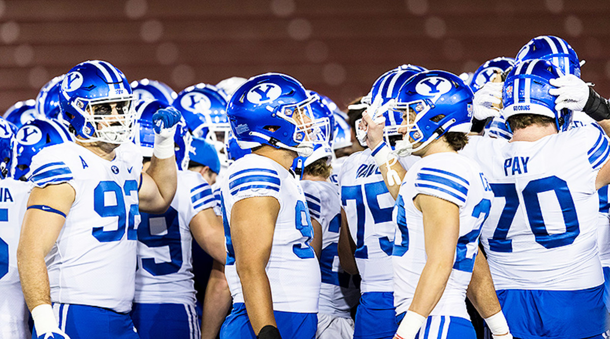

BYU Football
BYU Football is more than just a game; it's a tradition, a symbol of perseverance, and a beacon of competitive spirit. The program's rich history spans decades, marked by countless victories and storied achievements.
Tradition
Brigham Young University (BYU) football has a legacy steeped in both athletic excellence and its unique cultural and religious values. Founded in 1922, the Cougars football program has grown into a respected and competitive force in college football, known for its dynamic playing style and commitment to academic and spiritual principles. The team plays its home games at LaVell Edwards Stadium in Provo, Utah—a stadium named after the legendary coach who shaped the program into a powerhouse.Eras
The history of BYU football is divided into several key eras, each characterized by its unique contributions and challenges. One of the most pivotal periods was under the leadership of coach LaVell Edwards from 1972 to 2000. Edwards introduced a revolutionary passing offense, establishing BYU as a leader in offensive innovation. His era culminated in a national championship in 1984, led by quarterback Robbie Bosco. This victory placed BYU on the national map and solidified its reputation for producing top quarterbacks who excel both on and off the field.- Coach Gifford Nielsen
- Coached in the 1970s
- Led the team to several key victories, including important conference games
- Known for his strong leadership and commitment to developing quarterback talent
- Coach Norm Chow
- Coached from 2005 to 2011
- Helped BYU to numerous bowl game appearances and a successful offensive scheme
- Developed players who went on to successful careers in the NFL
- Coach Bronco Mendenhall
- Coached from 2005 to 2015
- Led BYU to 99 wins, including a victory in the Las Vegas Bowl in 2009
- Known for his defensive prowess and disciplined approach to coaching
- Coach Kalani Sitake
- Current head coach, appointed in 2016
- Led the team to significant wins and bowl game appearances, including the Hawaii Bowl
- Focuses on building a strong team culture and academic success
- Coach Aaron Roderick
- Coached BYU quarterbacks and offense since 2018
- Developed players like Zach Wilson and Jaren Hall into NFL prospects
- Emphasizes a balanced offensive strategy, blending run and pass effectively
Quarterback Legacy
The quarterback tradition at BYU is legendary, featuring players like Steve Young, Jim McMahon, Ty Detmer, and Zach Wilson. These athletes have not only excelled in college but also gone on to achieve success in the NFL. Ty Detmer, in particular, brought national recognition to the program by winning the Heisman Trophy in 1990—an unprecedented honor for BYU. This tradition underscores the program's commitment to developing elite talent, which is a cornerstone of the BYU football philosophy.Holistic Approach
BYU football places a strong emphasis on a holistic development approach, reflecting the values of The Church of Jesus Christ of Latter-day Saints, which sponsors the university. Athletes are required to adhere to the BYU Honor Code, which includes guidelines on dress, grooming, and personal conduct. Many players also take a two-year hiatus from football to serve church missions, returning to the field older and more experienced. This approach not only develops strong character but also fosters resilience and adaptability in players.Western Athletic Conference (WAC)
During its time in the Western Athletic Conference (WAC), BYU established itself as a dominant force, winning numerous conference championships and bowl games. The Cougars’ competitive edge was demonstrated in their matchups against some of the nation's top teams. The transition to the Mountain West Conference (MWC) in 1999 allowed BYU to continue this legacy of success, with conference championships and a series of notable bowl appearances. Since 2011, as an independent team, BYU has faced a broader array of opponents, showcasing its resilience and ability to compete at the highest level.Entering the Big 12
In 2023, BYU made a significant leap by joining the Big 12 Conference. This move marked a new era for the program, offering greater visibility and opportunities to compete against some of college football's best teams. The Cougars’ entry into the Big 12 was a strategic decision that not only increased the program's exposure but also provided access to better recruiting pipelines and greater visibility on a national stage. As they face new challenges in the Power Five conference, BYU remains committed to its values and tradition, seeking to build on its legacy of success.
Through its history, BYU football represents more than just wins and losses. It embodies a unique blend of athletic excellence, academic achievement, and spiritual dedication. The Cougars' commitment to their values and tradition ensures that they remain a respected and competitive force in college football, regardless of the changes in the sport.
Learn more about BYU Football (Official Website)

Back to Top